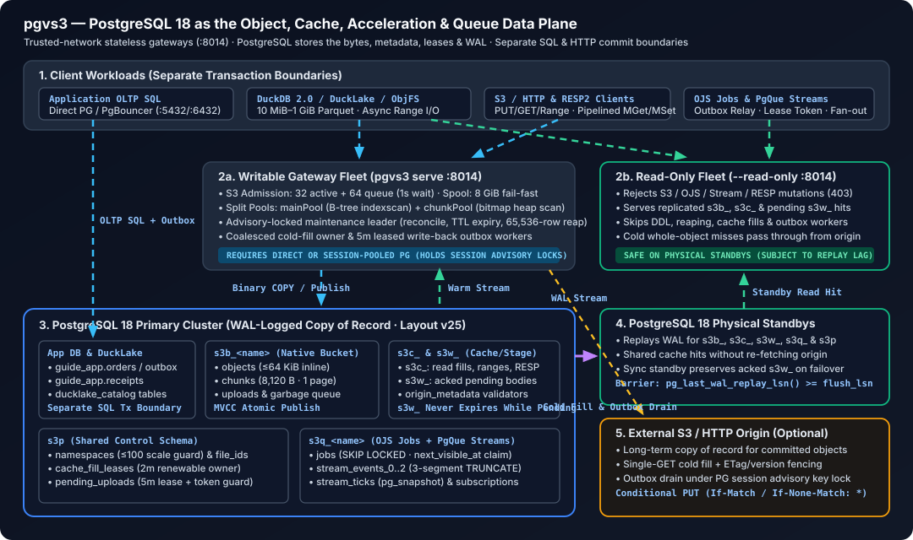

Architecture: PostgreSQL as the object data plane
pgvs3 uses one PostgreSQL data database for object bytes, metadata, shared cache rows and publication/coordination state. Replaceable Go gateways expose S3/HTTP and orchestrate optional origin I/O. PostgreSQL is not merely an index into a gateway-local storage system.
For a quick start see index.md; for deployment see operations.md; for storage internals and query paths see performance.md.

Product focus
The primary workload is 10 MiB–1 GiB Parquet objects consumed by DuckDB and DuckLake on trusted networks. There are two core roles: PostgreSQL object store, or shared origin-backed read cache plus durable write-back staging. Both retain the same catalog, publication and operating-envelope rules.
RESP2 values and OJS jobs/streams are bounded companions for co-located services. Their existing capabilities remain; parity with independent Redis or queue products is not the organizing goal. Sharing PostgreSQL does not make their application semantics interchangeable or their operations one transaction.
| Owner | Responsibility |
|---|---|
| pgvs3 | Protocol semantics, byte layout/encoding, bounded streaming, publication SQL, fill/outbox protocols and their fencing checks |
| PostgreSQL | Transactional row visibility, WAL commit/recovery, query execution, lock/sequence arbitration and physical replication |
| External origin, when configured | Committed origin objects and version/conditional-mutation semantics; freshness outside pgvs3 remains TTL-bounded |
| Deployment/operator | Trusted-network boundary, writable/read-only endpoints, replication/promotion policy, capacity and backups |
The optional Differential client experiment adds a native DuckDB repository on the client, not gateway-local authority or a new pgvs3 layout. Ordinary local commits differ from remotely durable snapshot/WAL publication. Client-writer fencing and snapshot visibility remain that client’s operating responsibilities; durable PostgreSQL S3 objects alone do not resolve diverging native histories. Existing DuckLake and object-storage roles remain.
The architectural bet is fewer independent systems to coordinate, not free object I/O or unlimited scale. Large bodies and read fills add PostgreSQL disk, WAL and replay work. The gateway still implements a specialized storage layout and distributed publication protocol; PostgreSQL supplies the primitives rather than making those protocols disappear. See roadmap.md for work that most directly strengthens or proves this model.
Operating envelope
| Dimension | Envelope |
|---|---|
| Namespaces | At most 100 namespaces per database, counting bucket, read-cache, write-back and queue schemas. This is a bounded single-cluster envelope, not a schema-per-tenant or sharded design. |
| PostgreSQL | One primary (writer) plus streaming standbys. A single database, not multi-primary or sharded. |
| Gateway workers | Multiple stateless workers behind a load balancer. Writable workers connect to the writer endpoint; read-only workers may connect to standbys. |
| Reads and lag | Writable workers read from the primary. Read-only workers on standbys serve reads subject to PostgreSQL replication lag. |
| Writes | Only through writable workers connected to the primary. The locally qualified DuckLake workflow uses one coordinated writer per dataset prefix/catalog; upstream PostgreSQL-catalog DuckLake supports multi-client concurrency. Gateway workers are not a lake writer/failover coordinator. |
| Backups | Physical base backup plus WAL archiving/PITR for production; logical pg_dump for export or small deployments. Origin data is backed up separately. See operations.md. |
| Security | Trusted network only. Authentication, authorization, TLS termination, audit logging, and per-tenant isolation are permanent non-goals. |
| Layout | Current layout is v25 (logged parent metadata for range caching, renewable owner-fenced fills, and consolidated PostgreSQL 18 publication SQL, retaining the v23 logged s3c_/s3w_ split and segmented streams). There is no in-place migration path; a layout change requires a fresh database and a re-import. |
| Coordination | PostgreSQL catalog, advisory locks, database leases, conditional writes, token fences, and sequences. No local process state is authoritative. |
Trust model (permanent)
pgvs3 is designed for trusted networks. Authentication is not part of the design and is not a future goal.
There is no inbound authentication, authorization, signature/credential validation, TLS termination, audit log, or per-tenant isolation. These are non-goals, not gaps on a roadmap. The gateway accepts header-based SigV4 because standard S3 SDKs send it, but it does not verify the signature and does not use the credentials for anything. Presigned URLs are rejected because a time-limited, object-scoped link would otherwise become an unscoped grant on the entire gateway.
Outbound origin credentials are separate: pgvs3 signs requests to S3 origins when configured. That does not authenticate clients to the gateway.
The only access control is network placement. Run pgvs3 on loopback, a private VPC/VLAN, or behind a service mesh that enforces identity, authorization, and TLS. Never expose :8014 to an untrusted network.
What this means in practice:
| Capability | Where it is enforced |
|---|---|
| Who may connect | Network / service mesh / firewall |
| Who may read or write a namespace | Network / service mesh |
| TLS in transit | Service mesh or private network |
| Audit and request attribution | Service mesh / PostgreSQL logs |
| Bucket drop, queue drop, cache flush | Network / service mesh |
Anyone who can open a TCP connection to :8014 can read, overwrite, or delete every namespace, force-drop buckets (DROP SCHEMA CASCADE), drop queues, and flush cache namespaces. Treat the listener as a database port, not as a public API.
Shape of the system
S3/HTTP clients RESP2/OJS companions
\ /
stateless pgvs3 fleet ------- optional origin I/O
/ \ |
writer endpoint read endpoints S3 / HTTP origin
/ \
PostgreSQL primary --WAL--> streaming standbys
catalog + bytes + shared fills/staging + control rows- One binary, one port. S3, OJS and plain HTTP share the HTTP listener; RESP2 is detected from the first byte. There is no sidecar, no local object authority, and no per-pod cache of object bytes or metadata. Scratch spools and local/test origin providers are not production copies of record.
- One PostgreSQL schema per namespace.
s3b_<name>is a durable bucket,s3c_<name>the WAL-logged shared cache namespace (origin fills and RESP/cache users),s3w_<name>a WAL-logged write-back namespace, ands3q_<name>an OJS queue/stream namespace. These have their own relations and table settings, but share cluster I/O, WAL and autovacuum capacity. Object chunk relations have a 32 TiB relation limit.DROP SCHEMA CASCADEis the namespace delete primitive. - The catalog is authoritative.
s3p.namespacesrecords namespace kind, name, schema, quota, and attributes. Buckets are created explicitly throughCreateBucket(PUT /{bucket}). An object write to a missing or deleted bucket returnsNoSuchBucket; it never recreates the bucket from a stale local view. - Immutable files, atomic publish. A write allocates a new
file_idfrom the database sequences3p.file_ids, streams 8,120-byte chunk rows, and publishes by swapping the object pointer in one transaction. Overwrites queue the oldfile_idfor the reaper; readers use MVCC snapshots, so an in-flight read never observes a torn object. - Small objects inline, large objects chunked. Native/write-cache objects can inline up to 64 KiB; read-cache/RESP values up to 8,120 bytes. Larger bodies use 8,120-byte logical blocks, with Zstd only when it shrinks. A full raw chunk fits one PostgreSQL page; offsets stay fixed at
no × 8,120. Multipart/pending publication can retain chunked bodies even when small. - PostgreSQL is the shared storage and coordination engine. Committed rows supply metadata and bytes to other gateways without a local invalidation bus; read-only workers on standbys may lag. One writable gateway acquires the database maintenance lock to run reconciliation, expiry and bounded reaping.
- The cache tier is optional and asymmetric. With
--origin-config, S3 reads become read-through fills in the WAL-loggeds3c_namespace, while writes use the WAL-loggeds3w_namespace.s3c_is the shared WAL-logged fill and RESP/cache namespace. The origin remains the long-term source of truth;s3w_is a durable staging area for acknowledged writes until the outbox commits them. See Origin cache tier.
Internal data shapes
Cache code boundaries
internal/objcache is organized by lifecycle, not by protocol or a second storage abstraction:
| File | Owns |
|---|---|
cache.go |
Tier lifecycle, one namespace/TTL resolver, range planning, renewable fills, bounded spooling, foreground mutations and token-guarded outbox drain |
origin.go |
Compiler-checked driver interface, capability/prefix/error boundary and S3, HTTP and local adapters; filesystem and ephemeral share one os.Root implementation |
registry.go |
Persisted configuration and one tier-replacement policy for global and per-bucket origins |
Named sections follow the request lifecycle. Foreground mutations and outbox flushes use lockWrite: local ordering, optional body validation, then a PostgreSQL session lock held across origin I/O. Fill ownership remains a renewable database lease, not a session lock. Registry replacements retain a working tier when opening a changed configuration fails. One explicit runtime owns the fill/pending limits and spool budget shared by all tiers in a gateway; constructor options fix range, write-back and read-only settings before workers start. There are no package-wide configuration setters.
Registry.Start owns a cancellable one-second refresh loop, joined by Close. It opens persisted tiers and resumes their outboxes without waiting for an S3 request; read-only tiers still never fill or flush. Request borrowing and the per-request origin bucket catalog check remain unchanged.
Each S3 request resolves and borrows its backend once per bucket, including a separate source bucket for copies. Routing, catalog admission and execution use the same selection. Retired tiers close after their last request releases them, so configuration refresh cannot close an origin beneath a streaming response. These are resource-lifetime references, not a bucket or object cache; the per-request origin catalog check stays in place.
Whole-object and aligned-range fills share coordination, not body buffering: large bodies still spool before taking a database writer connection. A waiting request can cancel without cancelling the fill owner. Write-back bodies remain logged, non-expiring while pending, and separate from the read cache. Neither this organization nor adding an adapter requires a layout change.
Keep simplification above the chunk loop: preserve the specialized COPY ingest, bitmap-read streaming, buffer reuse and bounded parallel reads in store. Moving files is not itself a code reduction; prefer eliminating duplicate decisions and invariants over introducing generic frameworks or removing tests.
For a performance-sensitive refactor, compare old and new binaries on the same PostgreSQL/origin setup with 10 MiB, 100 MiB and 1 GiB incompressible objects. Measure cold/warm GET, four-reader GET, HEAD, cold/warm 64 KiB ranges and durable write-back acknowledgement separately. Drain the outbox between samples and use repeated measurements. Reject a change that increases median latency by more than 20% or reduces throughput by more than 20%; do not hide a regression in an aggregate average. See benchmarks.md.
Store and RESP code boundaries
store/store.goowns connections, embedded schema, namespace lifecycle, admission and maintenance. Both pool policies share failed-open cleanup; writable startup and read-only startup share layout validation.store/object.goowns object contracts, metadata decoding, streaming reads and block encoding.store/write.goowns inline/COPY publication, multipart planning and server-side copies. Specialized algorithms remain named sections, not a new generic streaming layer.- The metadata section of
store/object.goowns the column list and decoder. Header reads omit inline bytes, ordinary reads decode them, and server-side COPY keeps their stored encoding. Do not add another partial metadata decoder when adding a field. - Publication authority is separate from metadata:
NormalPublication,FillPublicationandWriteBackPublicationselect ordinary, fenced-fill and durable pending intent. Fill leases are copied, pending bodies cannot expire, and reserved pending/deleted cache tokens are not ordinary origin versions. Session-locked writes go through a store-ownedLockedObject; callers cannot set a lock-skipping boolean. Released or mismatched scopes fail before publication. - Global, object and stream SQL function manifests specify exact signatures and results, including composite/table columns. Startup and doctor compare them with PostgreSQL’s catalogs. Scanners and SQL may change together only with the layout decision; no contract checks are added to the streaming loop.
store/cache.goowns origin metadata, fill fences, durable outbox persistence and the optimistic snapshot/transform/publish loop for GETSET, APPEND, SETRANGE and INCR. Transforms receive owned bytes and can run again after contention. Conditions and TTL preservation use the canonical writer; INCR remains inline-only and retains its cancellation-bounded retry behavior.Cache.Set(ReturnOld)uses this same atomic path.Cache.GetDeldecodesDELETE RETURNINGwith the shared metadata decoder and reads the pinned body with the normal object reader before committing. It supports multipart bodies and rolls back on a corrupt/truncated read.- Cache expiration, including a past deadline, is one conditional UPDATE. Readers hide expired rows immediately; ordinary TTL maintenance reclaims storage. PERSIST and NX/XX/GT/LT use that same predicate path.
- RESP handlers share value lookup and expiration-unit conversion. Narrow cache GET queries and batched MGET/MSET are intentionally specialized: a generic metadata query or per-key loop would penalize the small-value path.
Protocol and queue boundaries
- S3 transport/routing is in
s3/server.go, parsing/framing/checksums ins3/request.go, object operations and response streaming ins3/object.go, and XML models/encoding ins3/xml.go. One native and one origin adapter implement read, write and multipart capabilities; narrow handler interfaces remain. - Job persistence and transitions live together in
store/ojs.go; stream persistence stays instore/stream.go. Ordinary stream transactions use the store’s existingwithTxlifecycle. Maintenance paths with deliberate rollback-on-no-op behavior retain explicit transactions. - OJS endpoints return a body or an error. Typed
jsonEndpointbinding owns read-only checks and bounded JSON decoding; one response writer owns status, Location/Allow headers, error privacy and JSON encoding. Request validators retain their operation-specific rules and error precedence. - A stream route’s method table is also its Allow-header definition. Job fetch and stream receive share a polling loop, but take admission only during database attempts, never while sleeping or waiting on a client.
FetchJobsuses oneSKIP LOCKEDcandidate/update/return statement per queue, not a read/Go-plan/update/reload pipeline. The database clock and generatednext_visible_atgovern schedules and expired leases; exhausted attempts stay with maintenance. All requested queues still share one claim transaction.- ACK, NACK and CANCEL share locked-row loading, transition validation and transaction ownership. The direct transition switch and its source-state table remain the policy for row mutations and maintenance. Claim-case tests exercise the actual SQL implementation against PostgreSQL.
- Normal and cooperative stream receives share one snapshot/claim engine. Cursor selection and empty-batch advancement are the only policy branches; snapshot visibility, batch ceilings, replay, segment locks and publication are common. Cooperative acknowledgements still advance over contiguous work.
- Serve flags define environment types and defaults once. Environment values go through the flag parser, retaining yes/no booleans and decimal integers; CLI arguments override them. Bad environment values no longer silently fall back for unvalidated flags. Administrative force flags are not enabled by this environment binding.
- S3 adapters use method promotion for exact
Tiermethods. Only operations with genuinely different native/origin contracts retain wrappers.
Multi-worker safety invariants
Every cross-worker decision is made in PostgreSQL or at the origin with a condition. In-process maps and gauges may be used as hints, but never as the authority.
| Invariant | Coordination primitive | What it prevents |
|---|---|---|
| Namespace existence | s3p.namespaces catalog and namespace DDL functions |
A stale worker view or racing write recreating a deleted bucket |
| Unique immutable file IDs | s3p.file_ids database sequence |
Two workers or pods allocating the same file_id from local counters |
| Same-key conditional writes | Per-key transaction advisory lock plus If-Match/If-None-Match SQL checks |
Concurrent PUT/COPY requests both satisfying a condition that only one should |
| Maintenance leader | Session-scoped pg_try_advisory_lock |
Duplicate reconciliation, TTL expiry, and reaping passes across the fleet |
| Origin upload retries | s3p.pending_uploads rows claimed with database leases and FOR UPDATE SKIP LOCKED |
Duplicate retries, a crashed worker holding a row forever, or an expired worker racing a live one |
| Multipart cache publish | pending: object token and a token-guarded conditional cache update |
A stale completion publishing over a newer PUT/DELETE or resurrecting a deleted object |
| Read-through cache fill | Expected origin version recorded with the fill and checked conditionally when publishing | A slow fill overwriting a newer write-through cache row |
| Cold origin fill | Lease row in s3p.cache_fill_leases, then expected-origin publish |
Multiple gateways downloading the same cold object at once |
| Origin listings | Direct bounded origin walk | TTL-stale listing rows or refresh races |
What happens when a worker dies:
- Maintenance leader: the advisory lock is released with the database session. Another writable gateway acquires it on a later maintenance tick; there is no manual election step.
- Origin upload: the outbox row stays durable. Its lease expires and another worker claims it. The flush still carries the origin precondition captured at completion, so late work fails safely instead of overwriting a newer object.
- Cache fill or multipart publish: the conditional cache update fails its version/token check and is discarded. Readers continue to see the newer object or a cache miss.
- Client request: an aborted publication exposes no partial object, but a client disconnect after commit can leave the outcome unknown to that client. Conditions and reconciliation, not blind retries alone, resolve ambiguity.
Read-only gateways and failover
--read-only is an explicit gateway mode for PostgreSQL standbys and for read-only fleets on a primary. It is a fail-fast guard, not automatic standby detection.
| Operation | Read-only gateway |
|---|---|
S3 GET/HEAD, listings, bucket metadata, object attributes |
Allowed |
S3 PUT/COPY, multipart mutations, DELETE, CreateBucket/DeleteBucket |
Rejected (403) |
| OJS job/queue metadata reads | Allowed |
| OJS enqueue, fetch, ack, nack, heartbeat, cancel | Rejected (403) |
RESP reads (GET, MGET, range reads, metadata) |
Allowed, including logged s3c_ cache reads |
RESP writes (SET, DEL, expiry changes, FLUSHDB, counters) |
Rejected |
| Schema initialization, DDL, reaping, cache fills, origin retry worker | Skipped |
Durable s3w_ write-back reads (logged tables) |
Allowed, subject to replication lag |
Shared s3c_ read-cache reads (logged tables) |
Allowed, subject to replication lag |
/_cache/... raw cache reads (logged s3c_) |
Allowed, subject to replication lag |
Writes are rejected because a standby cannot accept them, and because leases, file IDs, cache fills, and maintenance leadership all require a writable primary. Rejecting at the protocol boundary avoids partially executing a request that would fail at the database. /readyz checks connectivity and the installed layout; it does not detect whether the endpoint is a primary or a standby, so deploy writable and read-only workers with the correct endpoints.
During a PostgreSQL failover:
- The deployment fences the old primary and old writable gateway fleet. Session advisory locks do not coordinate two independently writable PostgreSQL timelines.
- The writer endpoint is repointed to the promoted standby by the cluster’s HA mechanism (DNS, service, or proxy). Writable gateways reconnect.
- In-flight requests on connections to the old primary may fail. Clients can retry with appropriate conditions or reconcile state; atomic publish prevents torn objects, not end-to-end exactly-once execution.
- Maintenance leadership re-elects automatically when a writable gateway reaches the new primary and acquires the advisory lock.
- Read-only workers connected to standbys continue serving reads, subject to replication lag and their own reconnection.
A gateway pointed at the wrong role is still safe: a writable gateway pointed at a standby fails writes at PostgreSQL, and a read-only gateway pointed at a primary still rejects mutations. Monitor errors and route endpoints correctly.
Origin cache tier
The cache tier is enabled with --origin-config or a persisted origin configuration. It is optional; without it, buckets, cache namespaces, and queues store their data directly in PostgreSQL.
| Path | Behavior |
|---|---|
| Read-through miss | Fetch from the origin, spool the body outside a database transaction, then publish into the WAL-logged s3c_<namespace> with the expected origin version. Durable writes use s3w_<namespace>. |
| Read hit within TTL | Serve from PostgreSQL without contacting the origin (X-Cache: HIT). |
| TTL revalidation | After --cache-ttl, compare the cached object with origin size/mtime/version; refresh the cache or refill it if the origin changed. |
| Write-through / write-back | Small and conditional PUT/CopyObject writes mutate the origin and cache synchronously. Large unconditional writes commit a logged s3w_ object plus the pending row atomically before acknowledging; outbox upload follows. Pending-body failover durability depends on PostgreSQL’s replication policy. DELETE remains synchronous and leaves bounded tombstones. |
| Multipart completion | Publish the assembled write-back object plus the pending row atomically. With write-back enabled, unconditional completion can acknowledge before upload regardless of size; conditional completion flushes synchronously under the captured base-version precondition. |
| Range cache | Cold partial reads can pass through or populate aligned chunks according to the range-cache options; metadata is not a body. |
| Listings | Serve ListObjectsV2 by merging the origin walk with live durable write-back objects, one bounded page in memory; no listing index or refresh generation. |
Origins supply object data only. Every origin-backed bucket, per-bucket or global, needs a catalog row: bucket and object requests check it before the origin is contacted, and a missing row returns NoSuchBucket. Origins never create or drop buckets.
Cross-worker safety:
- Stale fill fencing: a read-through fill records the origin version it read and publishes conditionally. If a newer write-through write lands first, the stale fill cannot overwrite it.
- Delete tombstones: a write-through delete replaces the cache row with an expiring tombstone. A fill that started before the delete fails the version check instead of re-inserting deleted bytes.
- Conditional origin writes: production writable origins must support
If-Match/If-None-Match. Unsupported conditional combinations are rejected rather than ignored. - Leased outbox: a bounded pool of workers claims pending uploads with database leases and flushes rows in parallel. Expired leases are reclaimable after a crash.
- Token guards: multipart flushes and cache publishes check the pending token or expected version, so late work is discarded instead of reviving an older object.
Limits:
- No full external invalidation. pgvs3 does not receive origin events. An object changed directly at the origin may be served from cache until TTL revalidation or eviction.
- Delete tombstones are bounded. A write-through delete leaves a thirty-minute tombstone so in-flight fills cannot resurrect the object. An object recreated directly at the origin (outside pgvs3) may remain hidden through the cache until that tombstone expires; a write through pgvs3 replaces it immediately.
- Write-back changes the authority window. Acknowledged large writes are durable in PostgreSQL and may exist only in the cache until the outbox upload completes. Losing the cache namespace before that upload can lose those bytes; once the outbox drains, the origin is authoritative again. Persistent origin failures keep cache objects unexpired so acknowledged data is not silently evicted.
- Pending writes and listings. A pending write is immediately readable by key, and
ListObjectsV2merges pending cache objects with the origin listing, preferring the write-back metadata for duplicate keys. A durable write-back object keeps its local content ETag across the pending/committed transition; the origin ETag is retained for conditional origin operations. Foreground mutations and outbox uploads share local/session-key-lock ordering, with token/version checks fencing publication across gateways. - Origin is authoritative for committed objects. Losing or flushing the cache namespace loses acceleration for committed objects; reads refill from the origin.
- Read-only workers do not fill the cache. They pass cold reads through and never start the outbox worker.
See operations.md for configuration and performance.md for the fetch and flush paths.
Scope boundaries
Supported behavior is documented in index.md. The following are explicitly out of scope and return errors or are ignored by design:
| Area | Out of scope |
|---|---|
| Trust | authentication, authorization, SigV4 validation, presigned URLs, TLS, audit, per-tenant isolation, rate limiting |
| S3 | IAM/bucket policies, versioning, ACLs, Object Lock, tags, lifecycle, S3 bucket replication, event notifications, SSE-C, SSE-KMS, DSSE-KMS, multipart FULL_OBJECT checksums |
| OJS | workflows, cron, SSE/WebSocket events, schema registry, job-level dead-letter APIs, pause/resume, full conformance |
| RESP | RESP3, MULTI/EXEC/WATCH |
| Scale | More than 100 namespaces per database, schema-per-tenant layouts, sharding, multi-primary PostgreSQL |
| Layout | In-place migrations; every layout change requires a fresh database |
The one versioning affordance is a read-only ListObjectVersions shim: it reports each current object as the null version so test harnesses and cleanup tools can empty a bucket. It does not create versions or delete markers, and versionId on GET/DELETE remains unsupported.
When a feature is not implemented, the preferred behavior is to reject it explicitly rather than accept and silently ignore it. Presigned URLs follow that rule. Historical compatibility analyses are retained in proposals/hardening-options.md; they are not a current gap inventory. Use roadmap.md for active priorities.
Design principles
- PostgreSQL is the shared gateway authority. No local metadata/byte cache, namespace registry or allocator decides committed gateway state. Origins own committed external objects; pending acknowledged bodies remain a PostgreSQL responsibility until handoff. A pod can die without losing that authority.
- Explicit mutation authority. Respect read-only mode and database fences; do not bypass them to hide a failure. Role routing and promotion policy stay with the deployment, not an implicit gateway election.
- Bounded streaming and maintenance. Cap buffers, admission and batch sizes. Whole-namespace administration and deep origin listing walks can scale with data size; do not disguise them as constant-cost point operations.
- Atomic publish. A client either sees the old object or the new one, never a mixture.
- Explicit rejection over silent approximation. If pgvs3 cannot honor a protocol guarantee, it should say so.
- The network is the security boundary. Do not build half an auth system into the data path.